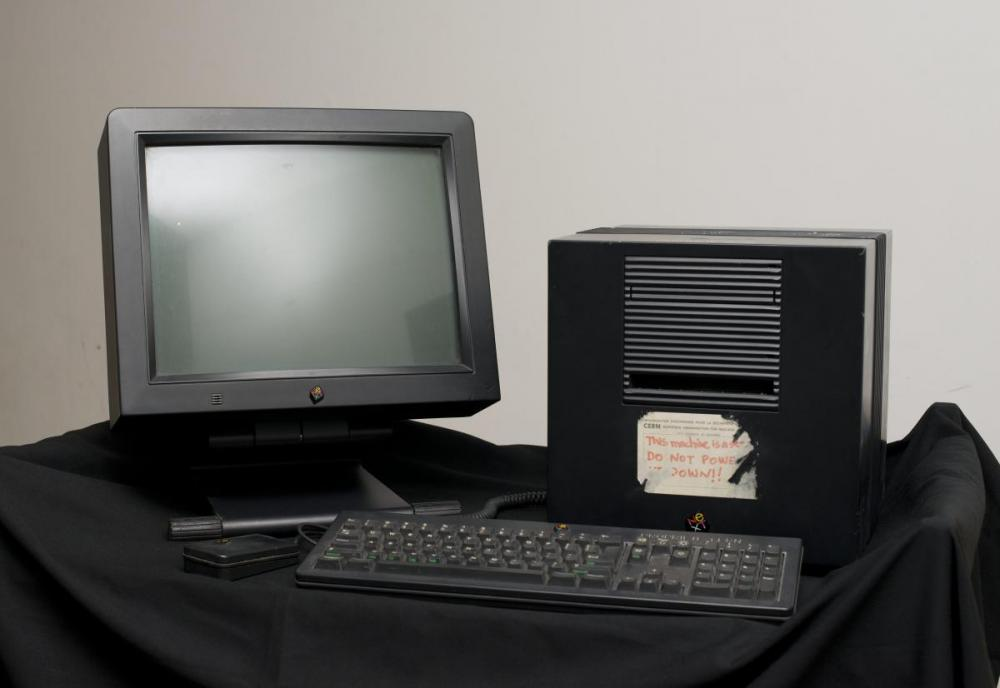
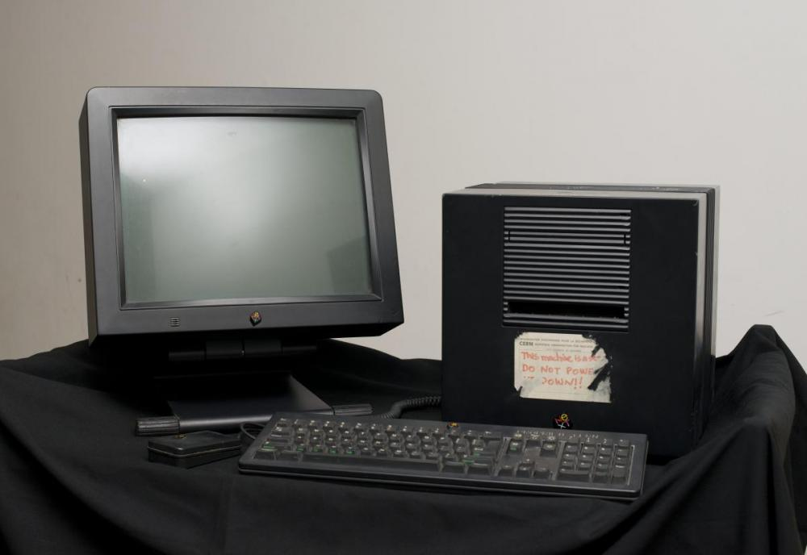
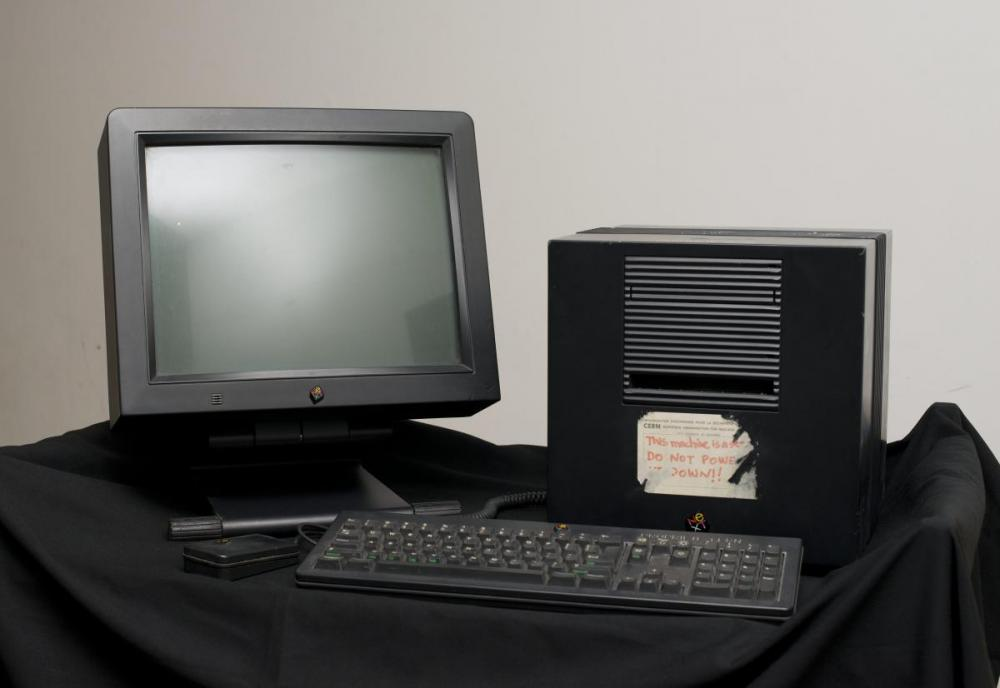

on the cover of the document. The WWW was not an official project of CERN, but Mr. Mike Sendall gave Tim Berners-Lee the time to work on it during September 1990. He used the NeXT computer, an early product of Steve Jobs.
on the cover of the document. The WWW was not an official project of CERN, but Mr. Mike Sendall gave Tim Berners-Lee the time to work on it during September 1990. He used the NeXT computer, an early product of Steve Jobs.The World Wide Web was invented by Tim Berners-Lee , he is a british computer scientist and was born in London.
Tim Berners-Lee graduated from the Oxford University, and he worked as a Software Engineer at
In March 1989, Tim Berners-Lee proposed his vision about the World Wide Web, and called his document "Information Management: A Proposal", his proposal was not immidiately accepted, and his boss (Mike Sendall), wrote a note that it was "Vague but exciting" on the cover of the document. The WWW was not an official project of CERN, but Mr. Mike Sendall gave Tim Berners-Lee the time to work on it during September 1990. He used the NeXT computer, an early product of Steve Jobs.
On October 1990, Mr. Tim has laready made the three fundamental technologies that remained on today's web. These are the:
Tim wrote the first web page editor called the "WorldWideWeb.app" and the first web server ("httpd"). Tim moved to the Massachussetts Institute of Technology in 1994 and founded the
, this is an international community that is devoted to develop open web standards. Tim still remains the Director of W3C until this day.